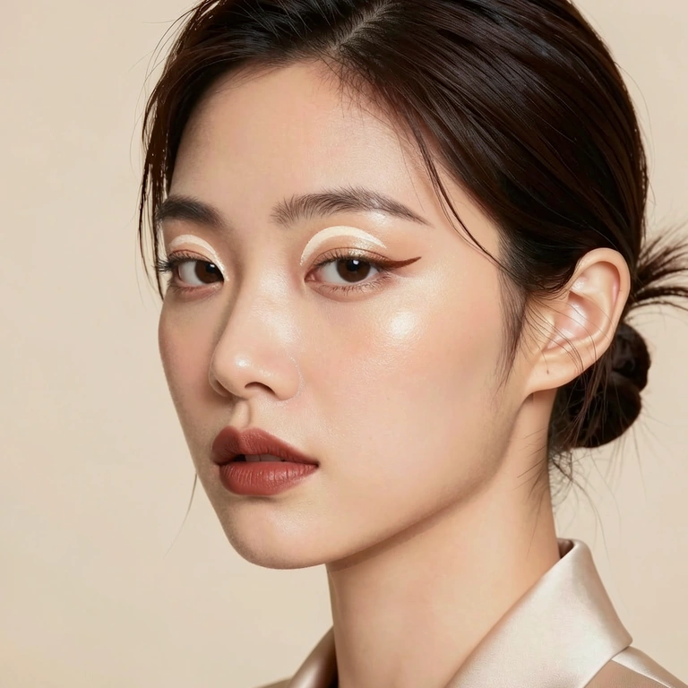
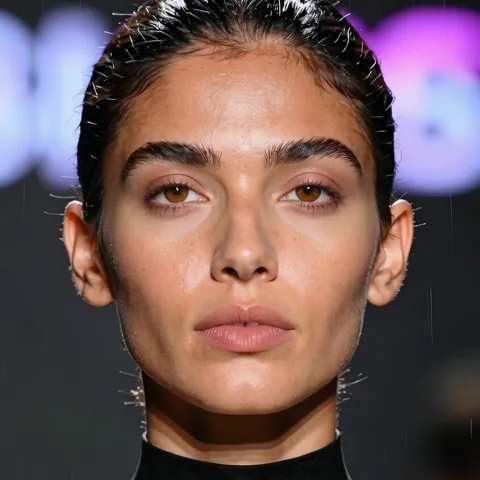
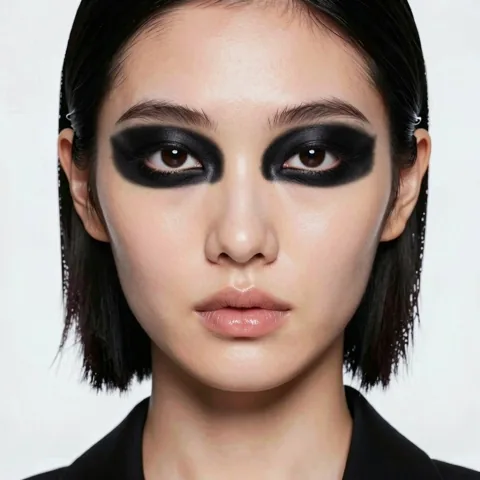
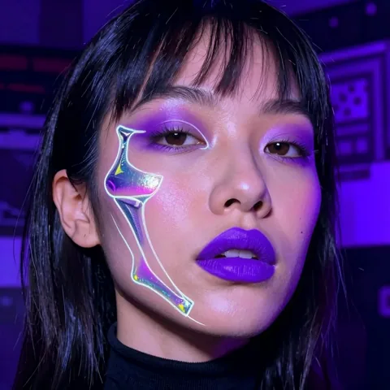
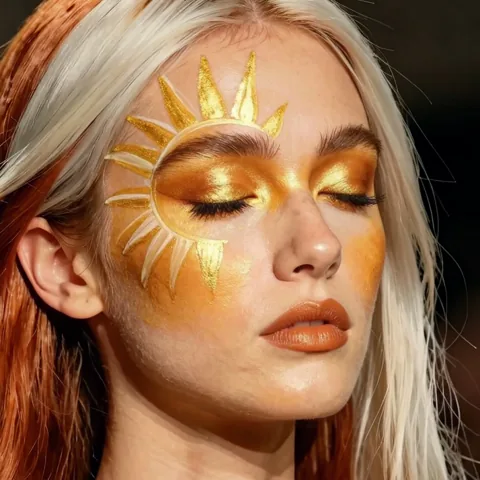

從參考中回收彩妝圖層
一次預測素顏、白底彩妝與黑底彩妝，從兩個已知背景求出覆蓋率與顏色。回收的圖層可快取，供之後不同的人臉與組合重用。
COMPUTER VISION · PREPRINT
1 University at Albany, SUNY2 National Yang Ming Chiao Tung University
TL;DR: 彩妝先回收為可重用的圖層，再組合不同參考，局部渲染後仍能直接調色、調強度與混合。
01 / RESULTS
切換參考妝容，查看保存的實際渲染結果。


 IrisMix
IrisMix柔霧日常 · 保存的 Stage II 模型渲染。切換範例與比較不會執行新的推論。
REPRESENTATION
眼妝可以來自一張照片，唇色來自另一張，彩繪則來自第三張。若每一次局部調整都要重新生成整張臉，原本滿意的細節也可能跟著改變。
IrisMix 以明確的覆蓋率與顏色表示彩妝。參考圖分解後可重複使用；組合好的妝容經過人臉對齊與局部渲染，仍會回到可編輯的圖層，讓後續調色、強度與混合操作直接作用在設計上。
02 / METHOD
共用 diffusion transformer，以不同 adapter 執行分解與局部渲染。
一次預測素顏、白底彩妝與黑底彩妝，從兩個已知背景求出覆蓋率與顏色。回收的圖層可快取，供之後不同的人臉與組合重用。
先將圖層對齊新的人臉，選取部位、疊加不同參考，再以一步局部渲染修整外觀。輸出仍是圖層，後續強度、顏色與混合不需再跑模型。
播放流程，或點選一個步驟，查看圖層如何被取用、組合與調整。
分開人臉與彩妝設計，將妝容保存成可重用的圖層。
動畫沿用研究展示的真實結果；章節與進度用於解說流程，不會啟動模型推論。
白／黑背景讓圖層回收有明確解；局部殘差限制生成的修改範圍。圖層的順序由保留的原始元件控制。
03 / APPLICATIONS
從日常唇色到藝術彩繪，保留局部取用與反覆調整的空間。
分別取用眼妝、唇色與彩繪，或將同一部位的多款設計依序疊加。
覆蓋率控制強度，圖層顏色控制色調；線性混合則可探索兩款妝容之間的變化。
研究系統可在圖層上移動、縮放與鏡射圖案，再進行渲染。網頁試妝提供其中的選取、疊加與調色體驗。
04 / COMPARISONS
同時比較妝容相似度、身份保留與局部控制。
每組各取三張參考的一個部位。切換方法，觀察眼妝、唇色、圖案與原本的人臉。




圖像節錄自論文的多參考比較。ChatGPT 與 Nano Banana 同時接收原圖與三張參考；Stable-Makeup 與 MagicMakeup 依序處理三張參考。此處 IrisMix 為回收圖層的對齊與合成結果，並非 Stage II 渲染。
對齊合成保留原圖，但眼線不一定貼合睜開的眼睛，光澤與細筆觸也可能不自然。局部渲染讓這些細節適應新的人臉，代價是可能改變眉毛或加粗筆觸。
以下節錄論文主表的平均值；↑ 越高越好，↓ 越低越好。保留未上妝原圖作為參照，避免只看單一相似度指標。
| 方法 | Face-ID ↑ | DINO-part ↑ | Spill ↓ | Color ΔE ↓ | Assign ↑ | 時間（秒）↓ |
|---|---|---|---|---|---|---|
| 原圖（未上妝） | 1.00 | 0.67 | 0.0 | 26.9 | -- | -- |
| ChatGPT | 0.68 | 0.82 | 5.1 | 8.5 | 0.70 | 133.7 |
| Nano Banana | 0.53 | 0.81 | 10.5 | 9.2 | 0.80 | 90.1 |
| Qwen-Image-Edit | 0.39 | 0.75 | 25.0 | 20.2 | 0.30 | 397.7 |
| FLUX.2-klein | 0.38 | 0.77 | 15.4 | 19.7 | 0.37 | 18.4 |
| MagicMakeup | 0.58 | 0.72 | 14.8 | 16.2 | 0.50 | 644.1 |
| FLUX-Makeup | 0.53 | 0.67 | 15.1 | 20.2 | 0.47 | 99.5 |
| FRAM | 0.46 | 0.74 | 9.9 | 14.9 | 0.70 | 18.5 |
| ART | 0.51 | 0.65 | 13.5 | 20.3 | 0.40 | 186.0 |
| Stable-Makeup | 0.25 | 0.65 | 20.7 | 20.0 | 0.40 | 67.6 |
| EleGANt | 0.62 | 0.69 | 10.6 | 16.4 | 0.57 | 1.1 |
| IrisMix · 僅對齊合成 | 0.68 | 0.75 | 0.0 | 5.8 | 0.80 | 2.2 |
| IrisMix + Stage II | 0.59 | 0.80 | 0.9 | 5.5 | 0.87 | 3.0 |
| 方法 | Face-ID ↑ | DINO-I ↑ | CLIP-I ↑ | L2-M ↓ |
|---|---|---|---|---|
| 原圖（未上妝） | 1.000 | 0.435 | 0.595 | 0.0 |
| Qwen-Image-Edit | 0.518 | 0.577 | 0.718 | 1587.1 |
| FLUX.2-klein | 0.403 | 0.480 | 0.668 | 279.0 |
| MagicMakeup | 0.723 | 0.528 | 0.721 | 18.5 |
| FLUX-Makeup | 0.729 | 0.517 | 0.693 | 172.0 |
| FRAM | 0.635 | 0.530 | 0.726 | 46.0 |
| ART | 0.701 | 0.558 | 0.720 | 43.7 |
| Stable-Makeup | 0.358 | 0.606 | 0.768 | 150.0 |
| EleGANt | 0.744 | 0.422 | 0.626 | 575.6 |
| IrisMix · 僅對齊合成 | 0.947 | 0.488 | 0.664 | 0.0 |
| IrisMix + Stage II | 0.900 | 0.502 | 0.675 | 2.4 |
| 方法 | Face-ID ↑ | DINO-I ↑ | CLIP-I ↑ | L2-M ↓ |
|---|---|---|---|---|
| 原圖（未上妝） | 1.000 | 0.359 | 0.556 | 0.0 |
| Qwen-Image-Edit | 0.504 | 0.660 | 0.744 | 1228.8 |
| FLUX.2-klein | 0.413 | 0.614 | 0.713 | 63.1 |
| MagicMakeup | 0.693 | 0.577 | 0.697 | 22.1 |
| FLUX-Makeup | 0.789 | 0.525 | 0.668 | 121.2 |
| FRAM | 0.646 | 0.578 | 0.715 | 61.3 |
| ART | 0.572 | 0.653 | 0.737 | 77.0 |
| Stable-Makeup | 0.340 | 0.604 | 0.763 | 139.9 |
| EleGANt | 0.747 | 0.376 | 0.616 | 397.9 |
| IrisMix · 僅對齊合成 | 0.903 | 0.536 | 0.646 | 4.7 |
| IrisMix + Stage II | 0.831 | 0.572 | 0.678 | 9.6 |
表格可左右滑動。數據來自論文主表的固定測試集，並非網頁即時計算。
Face-ID 衡量與原圖的身份相似度。DINO-part 比較取用部位與參考的特徵；單參考測試則使用整圖 DINO-I／CLIP-I。Spill 衡量指定圖層覆蓋範圍以外的色差，所有方法使用同一區域。Color ΔE 衡量部位的妝色誤差；Assign 是各部位最接近其指定參考的比例。L2-M 是臉部以外的 8-bit 像素均方誤差。
時間以每組妝容計；本機基線於單張 RTX PRO 6000 測量，逐參考執行的方法包含三次執行。ChatGPT 與 Nano Banana 為網頁手動計時，不能視為相同硬體下的模型速度比較。IrisMix 使用已快取的參考分解與前處理；時間不代表首次載入、瀏覽器速度或模型下載時間。
在多參考測試中，Stage II 將部位相似度從 0.75 提升至 0.80、指定參考比例從 0.80 提升至 0.87；身份相似度則由 0.68 降至 0.59。渲染後的 Spill 為 0.9，低於其餘受測方法的 5.1–25.0。ChatGPT 的部位相似度較高（0.82），EleGANt 的時間較短（1.1 秒）；各方法優勢並不相同。
05 / VIDEO
研究展示包含多參考組妝、圖層分解與局部編輯。線上試妝使用保存的渲染與本機筆刷模擬，自訂照片的完整模型推論目前暫停公開。
RESEARCH CONTEXT
LayerBeauty 以日常妝的 bare-first 與創意妝的 makeup-first 流程，提供素顏、妝容與圖層監督。它讓分解與局部渲染能在共用表示下學習。
目前的圖層不顯式建模立體幾何或隨視角改變的外觀；大角度轉頭、遮擋、強烈反光與立體飾品仍可能造成失真。渲染可改善外觀相似度，但也可能降低身份相似度。資料以合成影像為主，膚色與性別覆蓋仍不均衡。
DEMO
在試妝頁選擇範例、疊加多款參考，再用自由筆刷細畫。
@misc{lee2026irismix,
title = {{IrisMix}: Compositional Makeup Transfer with Layered Diffusion Transformers},
author = {Lee, Chia-Ming and Chang, Ming-Ching and Li, Xin and
Liu, Yu-Lun and Hsu, Chih-Chung},
year = {2026},
note = {Preprint},
url = {https://ming053l.github.io/IrisMix/}
}